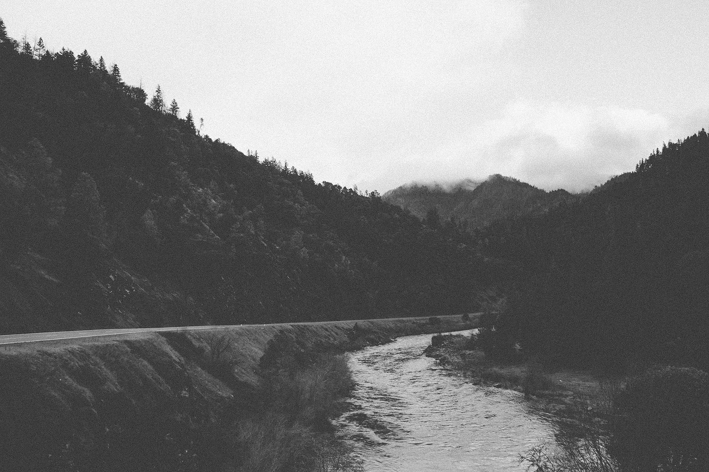
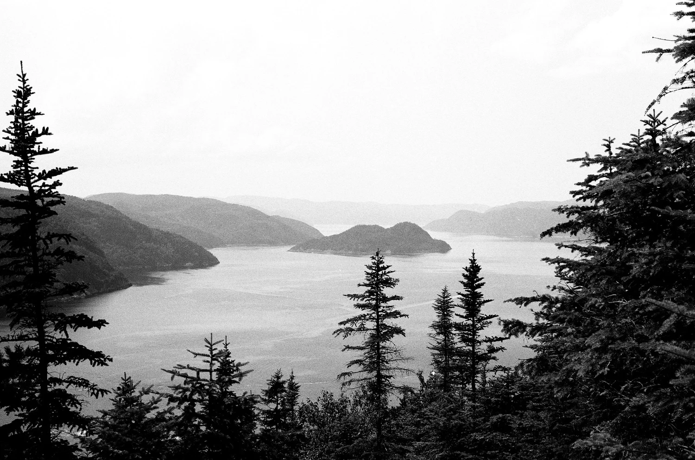
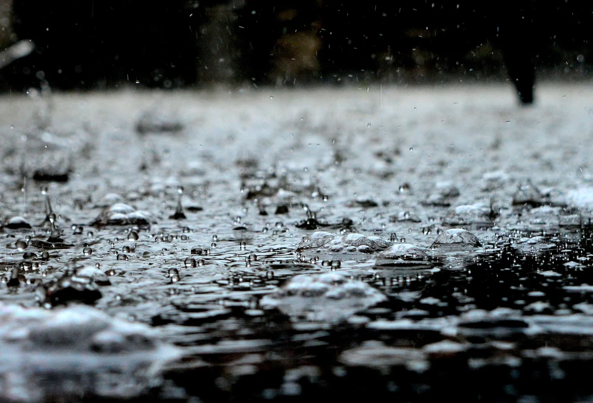
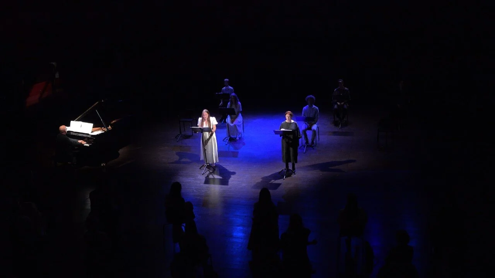
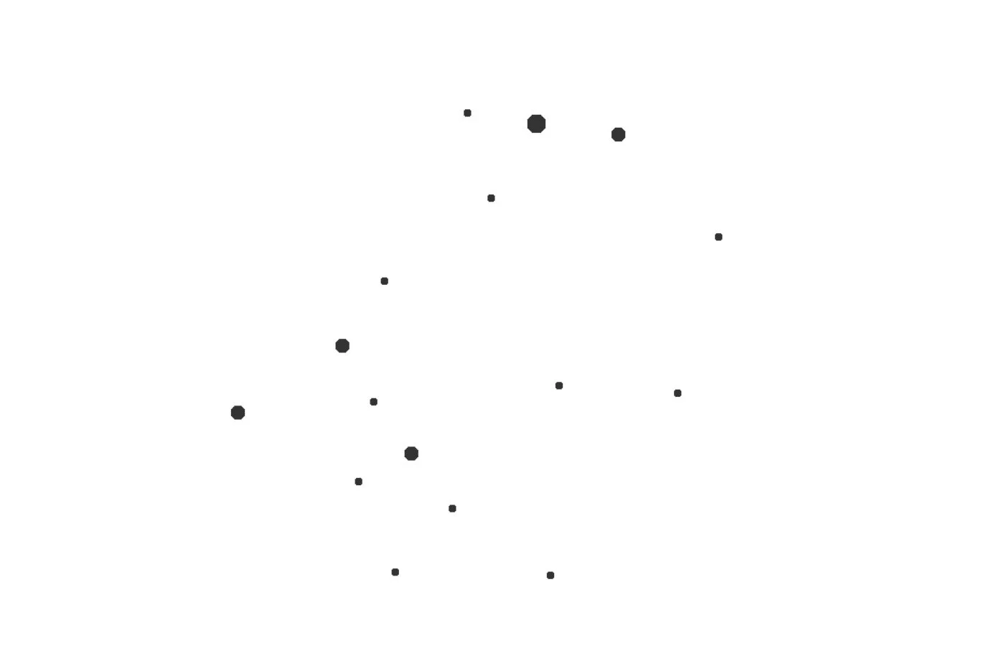
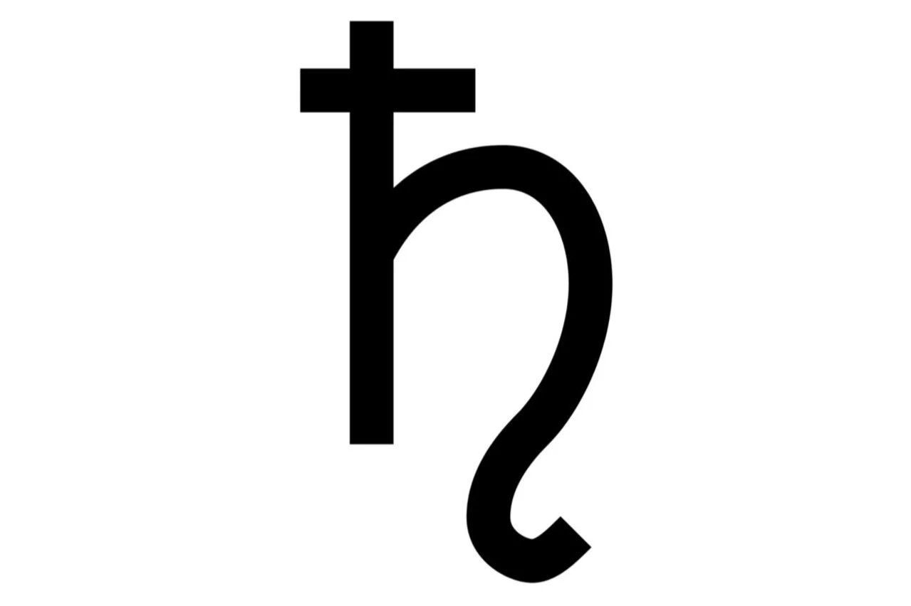
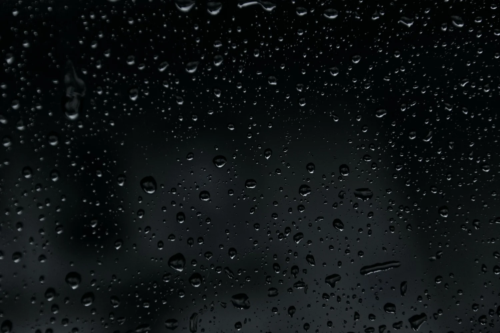
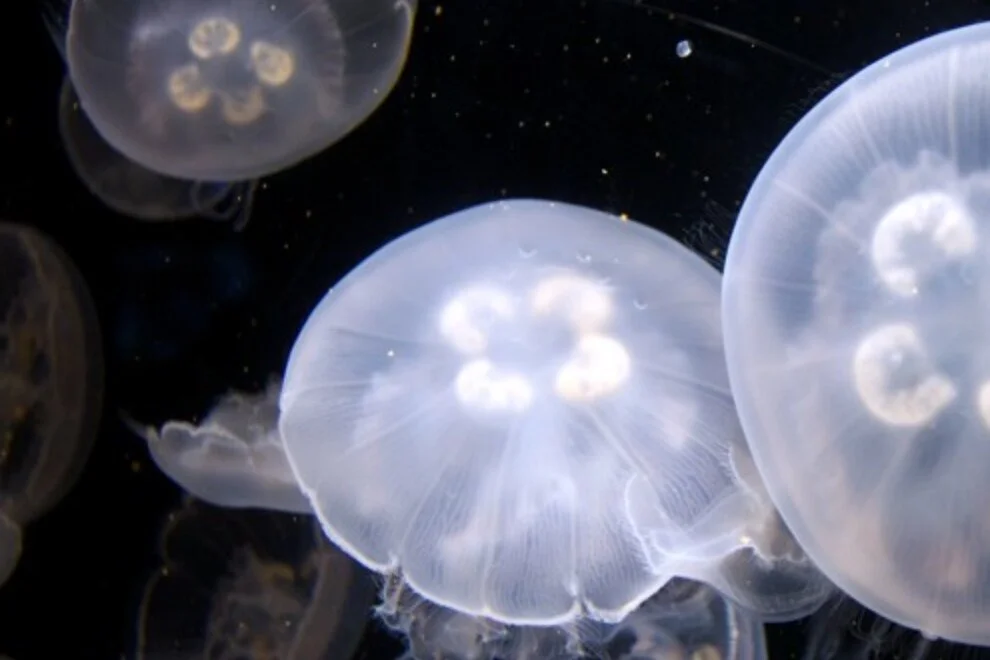
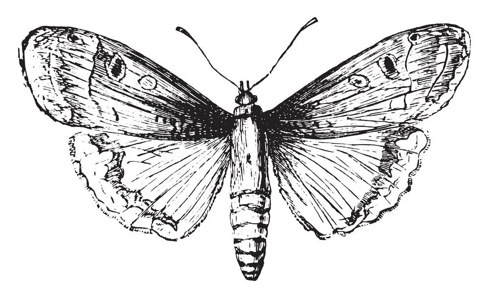

Antagonist
for male choir
Written for, and performed by Orphei Drängar in Universitetsaulan, Uppsala.
Conductor: Cecilia Rydinger.
Recording: Jesper Eklund & Anders Forsberg
An assortment of works available for listening.
for male choir
Written for, and performed by Orphei Drängar in Universitetsaulan, Uppsala.
Conductor: Cecilia Rydinger.
Recording: Jesper Eklund & Anders Forsberg

Arvegods (2023)
a contemporary interpretation of heritage.
for violin, vocals & tape
Incorporating Skären som var världen by Anders Forsberg and Lanna-Villes Schottis.

Tystnadens ro (2023)
a contemporary interpretation of Ack Värmeland, du sköna
for violin and tape
for string trio
Written for, and performed by Norna: Lina Samuelsson, Ester Forsberg & Rebecka Lagman.
Recording: Jesper Eklund & Anders Forsberg

Droplet (2019)
an impression of cold rain against windows and balcony railings
for gitarr quartet
Written for, and performed by (O)MEGA-4: Moa Nissfolk, Elisabeth Janson, Greta Karlsson & Astrid Berg.
Recording: Terese Fredenwall.

Scen V, part I
Scen V, part II
Scen V, part III
a piece in three parts with text by Hugo von Hofmannsthal from the original opera “Elektra” by Richard Strauss
for piano, two sopranos, baryton & voices
text: Hugo von Hofmannsthal
Performed by Mathilda Sidén Silfver, Ella Vahtras, David Edström & Erik Lanninger at Royal College of Music in Stockholm.
Photo & recording: Nebojsha Vojvodic, KMH.

Canis Major (2017)
choir piece about mental health, a topic that’s as difficult as important to speak of
for mixed choir
text: Adina Forsberg
Performed by Kungl. Musikhögskolans Kammarkör & Vokalharmonin with conductor Fredrik Malmberg in Kungasalen at the Royal College of Music in Stockholm.

Maxima Minima (2018)
how Saturn may sound like as it slowly turns in the absolute silence of space
The sound of Saturn
for bass saxofone
Performed by Jörgen Pettersson at the Royal College of Music in Stockholm.

Kali's Daughters (2019)
for string quartet
Performed by Olivia Høilund-Carlsen Ruud, Arttu Nummela & Marcus Michelin at the Royal College of Music in Stockholm.

Scyphozoa (2018)
inspired by jellyfish
for gitarr & two sopranos
Performed by Moa Nissfolk, Amanda Liljefors & Linnéa Törnqvist at the Royal College of Music, Stockholm.

the idea that a butterfly flapping its wings on one side of the earth can cause a hurricane on the other
for string quintet
Performed by Uppsala Kammarsolister in Vårdklockans kyrka, Visby.
Available works on SoundCloud
For complete list of works, please visit:
Complete works